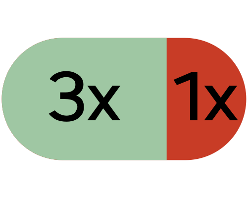

Problèmes signalés par le voyant dans la prise de recharge
allumé
Débrancher la fiche de recharge et l’insérer à nouveau dans la prise de recharge jusqu’à ce qu’elle se bloque.
Si le problème persiste, vérifier les points suivants :
La station de charge ou le câble sont connectés au secteur et n'affichent aucun avertissement ou message d'erreur.
Vous êtes dûment autorisé si la borne de recharge l'exige.
Le câble est connecté et correctement verrouillé dans la prise de charge.
Le véhicule n'affiche aucun message d'erreur relatif au système haute tension.
Si les éléments ci-dessus sont corrects et que le problème persiste, demander l'aide d'un garage spécialisé.

clignote trois fois en vert, puis une fois en rouge
 s’allume également dans le combiné d’instruments.
s’allume également dans le combiné d’instruments.La fiche de recharge n’est pas verrouillée dans la prise de recharge et la recharge d’urgence du verrouillage est effectuée avec un courant de charge nettement inférieur.

Brancher à nouveau la fiche de recharge dans la prise de recharge jusqu’en butée.
Si le problème persiste, utiliser un autre câble de recharge ou une autre station de recharge.
Si le problème persiste, faire appel à un atelier spécialisé.
La charge ne commence pas ou est interrompue
Un message indiquant qu'aucun chargement n'est possible est affiché.
Débrancher le câble de chargement du véhicule et le rebrancher.
ou :
Utiliser une autre option de chargement.
Si le processus de charge ne démarre pas ou s’arrête à nouveau, faire appel à un garage spécialisé.
Le temps de chargement est prolongé
Si la batterie haute tension est trop chaude après la conduite, le courant de charge peut être systématiquement réduit lors de la charge ultérieure afin de protéger la batterie haute tension de la surchauffe. Cela allonge le temps de chargement.
Vérifier qu’un courant de charge (CA) réduit n’est pas réglé dans le menu de réglage du processus de recharge dans le système d’infodivertissement Régler le processus de recharge ou dans le chargeur de batterie (Wallbox, câble de recharge universel).
Vérifiez que le voyant de la prise de charge n'indique pas une erreur.
La charge rapide avec du courant continu (CC) n'est pas possible
Un message s'affiche pour vous informer que la charge rapide n'est pas possible.
Charger la batterie haute tension avec du courant alternatif (CA).
Faites appel à l’assistance d’un atelier spécialisé.
Le chargement s'est terminé de manière inattendue
Sur l’écran principal du réglage du processus de recharge dans le système d’infodivertissement Régler le processus de recharge, vérifier si la limite de charge supérieure de la batterie n’a pas été déjà atteinte.
S'il y a un message d'erreur, vérifiez également la station de charge, essayez une autre station de charge le cas échéant.
Impossible de retirer la fiche
Un message concernant la surchauffe de la prise de charge s’affiche sur l’écran du combiné d’instruments.
Laisser refroidir la fiche de charge.
Si le problème persiste, faire appel à un atelier spécialisé.
ou :
Il y a un dysfonctionnement dans le mécanisme de verrouillage de la fiche de charge.
Débrancher la fiche de recharge en la déverrouillant mécaniquement Informations générales sur la recharge.